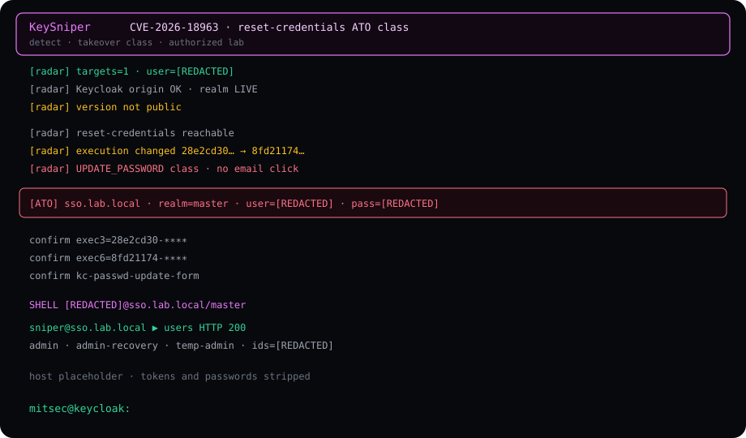

Summary
CVE-2026-18963 is an unauthenticated account-takeover class on Keycloak / Red Hat SSO. Two defects sit on the same reset-credentials path. Together they let a caller with a known username reach UPDATE_PASSWORD without the email proof the product advertised.
This is not “forgot password exists.” Forgot password existing is a feature. The finding is that the email step does not bind the session the way the design claims.

The two defects
tryAnotherWaystored a generic selector note that was not scoped to the current execution id.ResetCredentialEmail.action()calledcontext.success()without checkingACTION_TOKEN_USER_ID.
Unscoped state plus an unverified success flag is the chain. Persistence (“the password is now something else”) is the follow-on. Report the chain, not the follow-on, as the root cause.
Confirm signal (class)
A honest confirm is not a 200 on the login page. On an authorized lab the operator still looked for three things together:
- the selector form came back on the original reset URL
- the
execution=UUID rotated between the first selector and the pivot - the response carried
kc-passwd-update-form
Selector leak without the update form is not this CVE. That path is a skip.
CVE-2026-18963 Keycloak / Red Hat SSO class CWE-640 weak password recovery impact unauthenticated account takeover auth none patched 26.7.2 · 26.6.6 · 26.4.15 lab sso.lab.local · realm=master detect is the default mode · no password body on this page mitsec@keycloak:
Phases on the still
The capture is an authorized lab tape. Phases, not a request list:
- Probe — Keycloak origin, realm live, version often hidden.
- Reset reachable — forgot-password is enabled on that realm.
- Unscoped selector — the note is not tied to one execution id.
- Pivot — execution UUID changes. That is the leak.
- UPDATE_PASSWORD class — form present without the email click. This is
VULN. - ATO class — password actually written. That is a separate, destructive mode. Default on the public helper is detect.
Affected lines
Vulnerable below 26.7.2, and on the 26.6 / 26.4 trains below 26.6.6 and 26.4.15. Vendor fix is in those builds (Keycloak PR 51844). Confirm on the box you administer.
Fix
- Upgrade first.
- Until the box is on a fixed build, disable Forgot Password on every realm.
- If the instance was reachable, treat reset sessions from the vulnerable window as untrusted and rotate those accounts.
Repo
KeySniper stays on GitHub. This page does not mirror the script, the default new password, or a mass pipeline.